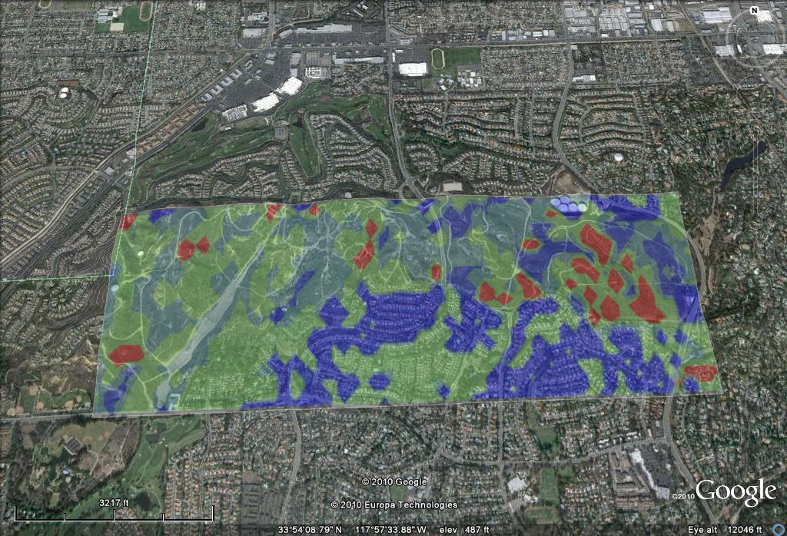

At a glance
Carbon sequestration and storage
Carbon sequestration and storage by terrestrial ecosystems is the net removal of carbon dioxide (CO2) from the atmosphere, with carbon being stored in vegetation or soils. CO2 uptake occurs through photosynthesis in all green plants. Terrestrial carbon sequestration levels depend on factors including climate, vegetation type, soils, and current and past land use practices.
Stored carbon release can occur when fire, land use change, deforestation, or other vegetation and soil disturbances release the carbon stored in vegetation and soils back to the atmosphere. The quantity of carbon released depends on the amount of carbon currently stored in vegetation and soils and the type and extent of the disturbance.
Anthropogenic (human-caused) carbon emissions result from burning fossil fuel, and release CO2 to the atmosphere. Since greenhouse gas emitters benefit from the waste absorption capacity of the biosphere, carbon sequestration and storage can be divided among emitters. Existing and proposed systems to cap and assign property rights to atmospheric greenhouse gas emissions use this framework. In other words:
Carbon sequestration ¡V stored carbon release = carbon available to offset emissions
By mapping levels of carbon sequestration, stored carbon release, and anthropogenic emissions in a common unit (tonnes C/yr), we can fully describe regional carbon balances ¡V the level of a region¡¦s net release or uptake of atmospheric CO2. This will become increasingly important as local, state, and national governments continue to inventory greenhouse gas emissions and implement strategies to address climate change.
Forests, grasslands, and other ecosystems store and remove CO2 from the atmosphere and serve as natural sinks for emissions that would otherwise contribute to global warming. ARIES helps quantify and map: 1) carbon sequestration, the removal of CO2 from the atmosphere, 2) the potential release of stored carbon in vegetation and soils through deforestation or fire, 3) other CO2 emissions from human activities. By mapping these processes, we can provide coarse-scale estimates of regional carbon balance while enabling analysis of tradeoffs between carbon sequestration and storage and other ecosystem services.
In the field | ||||
Madagascar
|
Western Washington State
ARIES is being used to help planners understand tradeoffs between carbon sequestration and storage and other ecosystem services, such as timber harvests, flood control, and water supply in the Pacific Northwest forests. Careful consideration of these tradeoffs will be important as climate change policies continue to evolve.
|
San Pedro River, Arizona and Sonora
Carbon sequestration and storage estimates are increasingly demanded by public and private land managers in the southwest and beyond. ARIES¡¦ application to Southeast Arizona provided estimates of carbon sequestration and storage on public and private lands in this semiarid region.
|
West Coyote Hills, California

Carbon sequestration and storage were mapped for a key parcel of undeveloped land in southern California. Given the state's leadership in carbon accounting, such assessments will become increasingly important in managing conservation and development tradeoffs.
|
Vermont
Vermont's low population density and high forest cover make the state a net sink for carbon emissions. There is great interest among the state¡¦s agricultural and forestry communities in developing sustainable forestry and agricultural practices that increase carbon sequestration and storage and other ecosystem services. Tools like ARIES can help map and quantify such ecosystem services tradeoffs.
|